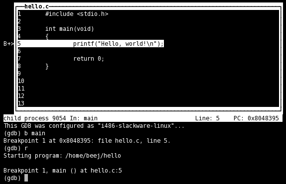

This is a very quick-and-dirty guide meant to get you started with the GNU Debugger, gdb, from the command line in a terminal.
Contents
Compiling
You have to tell your compiler to compile your code with symbolic debugging information included. Here's how to do it with gcc, with the -g switch:
1 : #include <stdio.h> 2 : #include <stdlib.h> 3 : int main(int argc, char **argv) 4 : { 5 : char *buf; 6 : 7 : buf = malloc(1<<31); 8 : 9 : fgets(buf, 1024, stdin); 10: printf("%s\n", buf); 11: 12: return 1; 13: }
Once you've done that, you should be able to view program listings in the debugger.
More Information
Check out the Official GDB Documentation for more information than you can shake a stick at!
License
Starting The Debugger
There are several ways to launch a program called hello in the debugger:
And here is a screenshot of what you'll see, approximately:

References
GDB: The GNU Project Debugger17 Jun 2019